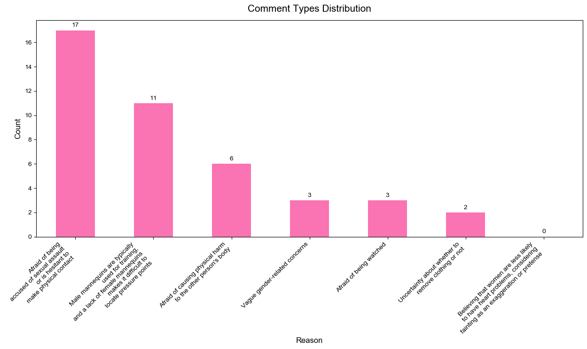
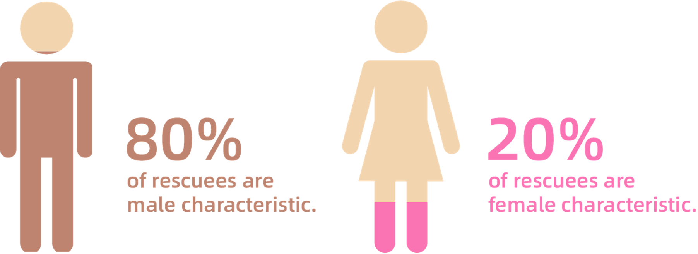
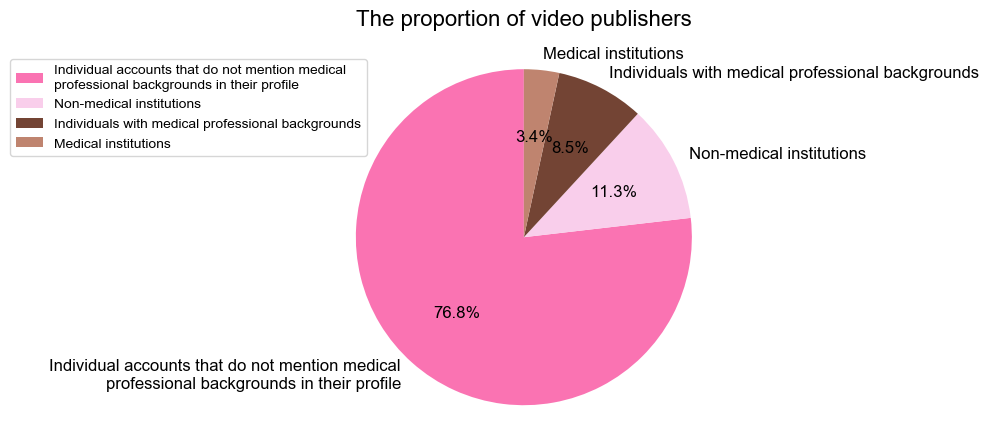
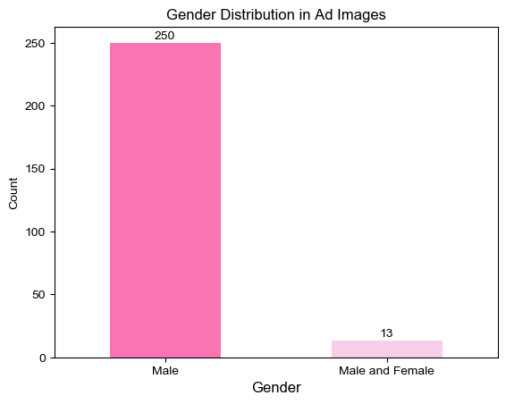
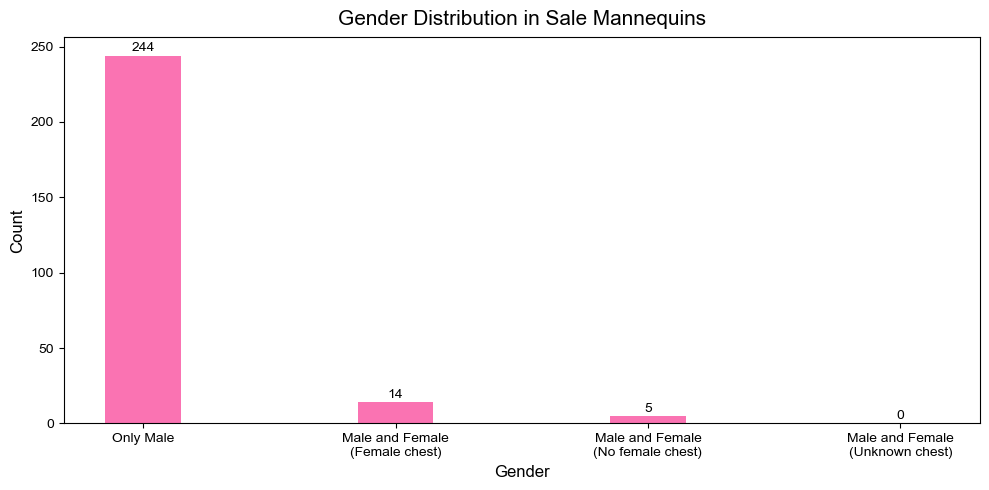
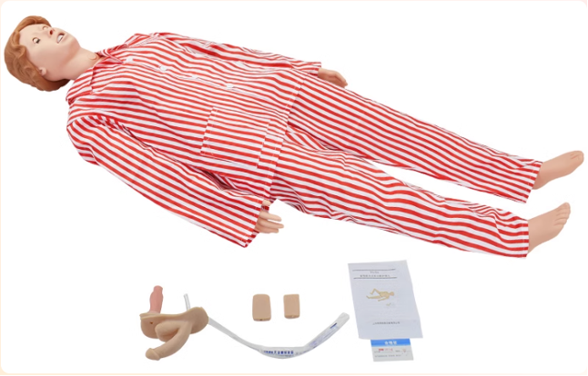

"On hearing of it, I am wordless but excited. A significant change is going to happen." Tatala posted on April 8 on her Weibo, a Chinese social media.
Tatala said her friends had been petitioning the American Heart Association (AHA) to add female manikin to the official CPR guidelines. The petition would be considered if the number of petitioners hit 7500.
Tatala, a Chinese sex educator and a postgraduate at Harvard University, is famous for popularizing gender and sex-related content among Chinese netizens.
Part 1: CPR and Lifesaving
CPR Can Save Your Life
Outside-of-hospital cardiac arrest, abbreviated as OHCA, is an often-fatal event caused by the sudden loss of heart function in someone.
Data shows that the incidence rate of OHCA worldwide is estimated to be between 20 and 140 cases per 100,000 people, with a survival rate between 2% and 11% (Berdowski et al., 2010).
Cardiopulmonary resuscitation, also known as CPR. If a bystander can immediately perform CPR on the victim, the chances of survival after cardiac arrest can be doubled or tripled (American Heart Association).
With the help of Automated External Defibrillation, namely AED, a person's survival rate can be improved as much as possible.
39% vs 45%, Female are Receiving Less Bystander CPR than Male
Duke University led a study based on 8,100 people in 16 North Carolina counties from 2010 to 2014 and found that bystander CPR rates were rising. Still, survival chances had no improvement for women (American Heart Association).
No change happened in the later three years.
A survey found that among more than 19,000 people experiencing out-of-hospital cardiac arrest from 2011 to 2015, only 39% of the women received CPR from a bystander in public compared to 45% of the men (Blewer et al., 2018). As a result, the men's survival rate was 23% higher than the women's.
Less than 1%, the Success Rate of OHCA Rescue in China
An article published on the Chinese Center for Disease Control and Prevention's website in 2021 showed that China has an estimated 544,000 annual mortality from cardiac arrest (China CDC).
However, bystander CPR is underutilized in China. Take Beijing and Shanghai as examples; the implementation rates of bystander CPR are only 11.4% and 4.2%, respectively, which are much lower than 46.1% in the United States and 32.2% in Japan. As a result, the success rate of OHCA rescue is as low as less than 1% in China, compared with approximately 10% in other developed countries.
Moreover, gender disparities in CPR rescue haven't received much attention in China yet.
Part 2: Why Aren't Women Getting CPR?
Don't Dare To: Bystanders' Gender Myths
Most people who haven't been trained as a doctor or a nurse are reluctant to give bystander CPR on others, especially on women.
"Having done CPR with an ambulance worker certificate so many times, I'm still unfamiliar with locating the pressing point on a female." atypia_, a Weibo user, commented.
40.5%, Sexual Assault is the Biggest Fear
People's fear of doing bystander CPR on women can be seen on Chinese social media.
On Weibo, 81 unique records were searched with the keyword "CPR women." On Zhihu, 17 and 7 valid comments were collected from "How to do CPR on women with a bra?" and "Should I do bystander CPR on a woman when encountering on the street?".

Figure 1 Concerns on CPR for women
By filtering and calculating, 42 out of 105 records were valid. 40.5% of the comments show that the most significant concern about CPR on women is a fear of being accused of sexual assault due to physical touch. The second concern, up to 26.2%, is the difficulty locating the pressing point because no female manikins are in training. Other considerations include a fear of being watched and spread maliciously.
Invisible and Subtle Gender Myths.
Some gender myths can be hard to detect partly because we have become accustomed to them subtly.
A perception is that women are less likely to have heart-related problems than men or are more likely to be overreacted or "fake" an incident, known as "Peng Ci," roughly meaning a trap for asking for compensation (American Heart Association).
Despite gender myths, bystander CPR is confronting other challenges.
Don't Know How: No Training on Women in CPR
From online CPR training videos to online CPR manikin selling, all findings point to one fact: females are out of the limelight in CPR.
Three hundred videos were collected with the keyword "CPR training" from Bilibili, a Chinese video website with 294 million active users monthly in 2022..
80% Are Male Rescues

Figure 2 Characteristic Distribution of Manikins
96% of Videos Have No Mention of Women
Figure 3 Distribution of Videos Don't Mention How to Perform CPR for Women
76.8% of Videos Are Posted by Individuals Without Medicine Background

Figure 4 Distribution of Videos Don't Mention How to Perform CPR for Women
Three hundred records were scraped by Python from Taobao, a Chinese e-commercial platform, with the keyword "CPR manikin." Among them, there are 263 valid records.
95% Cover Images Are Male Manikins

Figure 5 Gender Distribution of Manikins on Cover Images
93% Are Male Manikins on Sale

Figure 6 Gender Distribution of Manikins on Sale
Some online stores had male and female manikins. Still, in these cases, none of the female manikins is for CPR training exclusively, but for multifunctional emergency nursing training.

Note. The picture on the left is a CPR Manikin, while the right is a multifunctional manikin.
Female manikin with male body
Five out of nineteen female manikins had no female breasts. Likewise, the world's well-known CPR female manikin, Annie, has no breast feature, which is the core of educating bystanders when initiating correct CPR on women.
Female have no place in official CPR guideline
Two hundred sixty-three valid records of CPR manikins were made based on either 2015 or 2020 AHA guidelines on CPR.
Nevertheless, none of the guidelines mention how to do bystander CPR on women. Similar cases are applied in other CPR guidelines, including the European Resuscitation Council Basic Life Support 2020 version and the International Liaison Committee on Resuscitation. Instead of being written on the official guidelines, some information about CPR on women is listed on AHA and the Singapore Heart Foundation's website.
"I haven't noticed that females are receiving less bystander CPR in OHCA condition," Dr. Liu Chang, deputy chief physician of Guang'anmen Hospital, China Academy of Chinese Medical Sciences, said. "The attention on gender disparities in bystander CPR is good to be raised. Although medicine students put gender behind lives when doing CPR, it might be a problem for the mass."
The petition for improving the gender exclusivity of AHA CPR education has received 34,766 signatures worldwide until May 10.
"Not only America, but China also needs female manikins too. I asked the teacher why there were no female manikins when I got CPR training at university. The teacher said the pressing point is at the midpoint of the line connecting the two nipples, which is applied to both men and women. But for on-hand practice, a female manikin is necessary." UNO, a Xiao Hong Shu user, commented below a post related to the petition.
Part 3: How to Do CPR on Women?
Save Life First and Modesty Can Be Preserved
The basic principles of CPR for women are just like those for men. However, due to inherent gender biases, many still doubt how to perform CPR on women. Here are some common questions and answers from professional organizations.
When Performing CPR or Using an AED on Women, Is It Necessary to Cut or Remove Their Clothes or Bra?
According to the AHA's website, all clothes should be removed from the chest before CPR or using an AED.
While the Singapore Heart Foundation's promotional video believes that whether it is a man or a woman, there is no need to remove clothes unless there is an obstacle that does affect your operation, in which case the block can be removed.
How to Protect the Privacy of the Rescuee When Performing CPR or Using AED on Women?
The AHA points out that after removing the clothes from the chest and placing the AED pad, you can cover the chest with a cloth or remind bystanders not to watch.
"The immediate reaction and quality of CPR on the female are much more important than paying too much attention to the breasts and bra." Dr. Liu Chang said.
In sum, concerns for privacy and inappropriate behavior are valid but can be addressed. Modesty can be preserved as much as possible but should not delay medical care (Code One).
Part 4: "How Would I Save My Mother and Daughter?"
To make women visible and have equal chances as men when doing bystander CPR, multiple efforts should be gathered to solve this systematic problem of dismissed women in CPR.
Some companies have invented female manikins to raise people's awareness and help them feel comfortable performing CPR on women in training (Treisman, 2019). Most states in the United States have good Samaritan laws that protect citizens who perform CPR (Code One).
For individuals, appropriate training in CPR is vital. In general, people can receive professional CPR training from local red cross associations, first-aid centers and hospitals, fire stations, and some companies with the credibility to provide CPR training based on AHA official guidelines.
"In the book, the invisible woman says numerous females are dying of inappropriate treatment because medical experiments use males to represent all humans. You are doing a very significant deed!" Bi Qi Bao Zai Tao Xiao Yu, a Xiao Hong Shu user, commented on the petition to AHA.